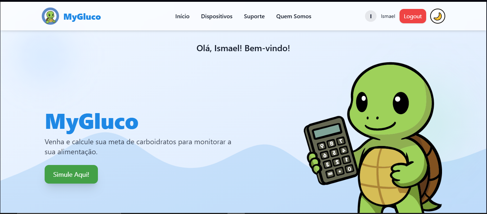
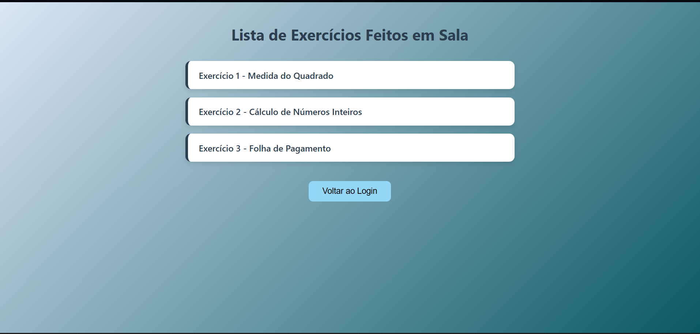

/ Trabalhos
Meus Projetos
Confira alguns dos meus projetos de cursos e pessoais.
Landing Page – MyGluco
Landing page para o sistema MyGluco, com foco em usabilidade e experiência do usuário. Apresenta funcionalidades, benefícios e conscientização sobre diabetes.

Aplicativo Mobile – MyGluco
App mobile para gestão de diabetes: monitore glicose, refeições, atividades e medicamentos com gráficos, relatórios e notificações personalizadas.
Projetos em Sala – ETEC
Mix de projetos com foco em lógica de programação usando HTML, CSS e JS. Desenvolvidos na ETEC: listas de exercícios, sistemas de login e cadastro.
